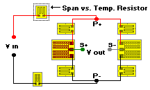

Span Shift with Temperature Change
Span Shift with Temperature ChangeSpan Shift with Temperature, 2 Points
Circuit Refinements command
General Considerations
Span Shift with Temperature Change
Span Shift Compensation Techniques
Inputs
 Span at High & Low Temperature (-100 to +500F, 0.000 to 10 mV/V)
Span at High & Low Temperature (-100 to +500F, 0.000 to 10 mV/V)
No specific temperature value are required to be entered, but the low temperature must be lower than the high temperature entry. We suggest a minimum 50 deg F difference between the two temperatures to obtain better resolution. If the difference in temperatures entered is less than 50�F, the following warning message appears:
�It is recommended that the difference in the high temperature and low temperature be a minimum of 50�F. If less than this, accuracy of compensation is degraded.�
Span is measured at these same two temperatures, and entered in mV/V.
 Resistor Material
Resistor Material
Choose Balco, nickel or copper compensation resistor material from LIST BOX. Resistor TCR (measured as a chord slope between +50 and +150F) is automatically filled in.
In addition, custom TCR values can be manually input by selecting User Defined from the Resistor Material LIST BOX.

Bridge Resistance (50 to 10,000 ohms)
This is the resistance value as measured between P+ and P- illustrated in the drawing. For bridges using four gages of equal resistance value, the bridge resistance and gage resistance will be essentially equal.
Solutions
 Rmod
Rmod
This is the required span vs. temperature resistor value based on the entered data and resistor material chosen. It is inserted in the bridge power supply line between Vin and P+. An alternate, less restrictive method is to use Rmod/2 and insert this value in each of the two power legs. This is particularly important in transducers that may be connected in parallel circuits with other load cells.
Span
After adding Rmod, this is the new, desensitized span of the transducer.
Resistor Type
Once the Rmod value is calculated, the user can select the resistor type to be used. Choose between A, C or D pattern bondable resistors or select the wire table.